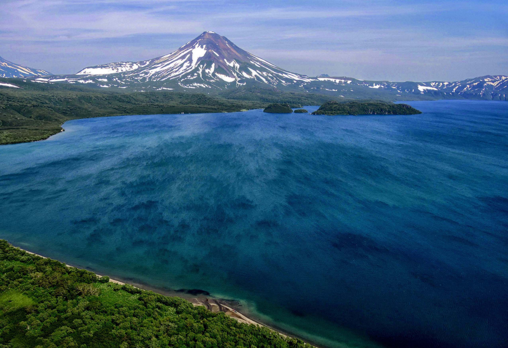

Добро пожаловать на Камчатку!
Мы рады приветствовать вас в мире захватывающих приключений и уникальных природных красот Камчатки! Наша команда профессиональных гидов предлагает вам незабываемые экскурсии, которые позволят вам увидеть лучшие места нашего удивительного края: величественные вулканы, прозрачные озера и пышные леса, а также познакомиться с уникальной флорой и фауной региона.
Ближайшие экскурсии:
-
Прогулка на долину гейзеров - 15.05

Откройте для себя удивительный мир природных чудес, где гейзеры и горячие источники создают уникальный ландшафт, полный захватывающих зрелищ и звуков. Обещаем, будет интересно!
Стоимость: от 1000 руб.
-
Завораживающая экскурсия на Курильское озеро - 28.05

Погрузитесь в атмосферу спокойствия и красоты, наслаждаясь живописными видами на озеро, окруженное величественными горами и богатой флорой и фауной.
Стоимость: от 1800 руб.
-
Пешеходная экскурсия на вулкан Авачинский - 01.06
Присоединяйтесь к захватывающему восхождению на один из самых активных вулканов Камчатки, где вас ждут потрясающие панорамы и уникальные геологические образования.
Стоимость: от 2500 руб.
Наши гиды:
-
Наталья
Опытный гид с более чем 10-летним стажем работы на Камчатке. Она специализируется на экотуризме и активно занимается защитой окружающей среды. Ее экскурсии всегда насыщены интересными фактами и увлекательными историями о природе Камчатки.

-
Екатерина
Профессиональный гид и геолог, увлеченная изучением вулканов и геологических процессов. Она проводит экскурсии по вулканическим районам Камчатки, рассказывая интересные истории и объясняя участникам, как образовались знаменитые вулканы региона.

-
Александра
Сертифицированный экскурсовод и культуролог, фокусирующаяся на культурном наследии и традициях коренных народов Камчатки. Она проводит экскурсии по историческим местам, рассказывая о культуре, обычаях и образе жизни местных жителей.